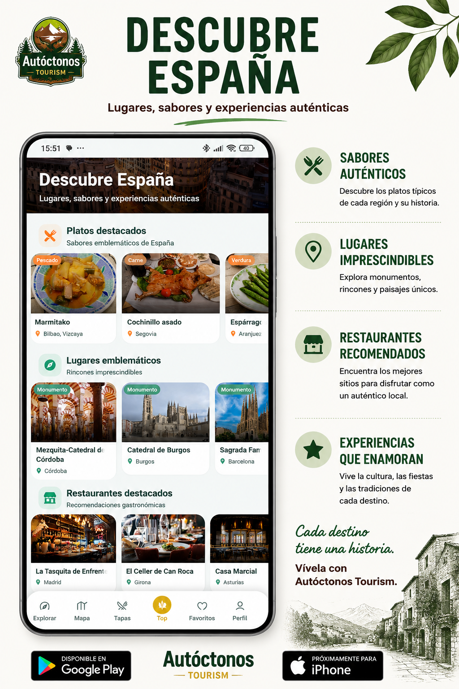

01
Descubre lo que tienes cerca
Autóctonos pone el destino en primer plano desde el primer momento. La app ayuda a localizar lugares con personalidad propia, propuestas cercanas y experiencias que no siempre aparecen en las rutas turísticas habituales.